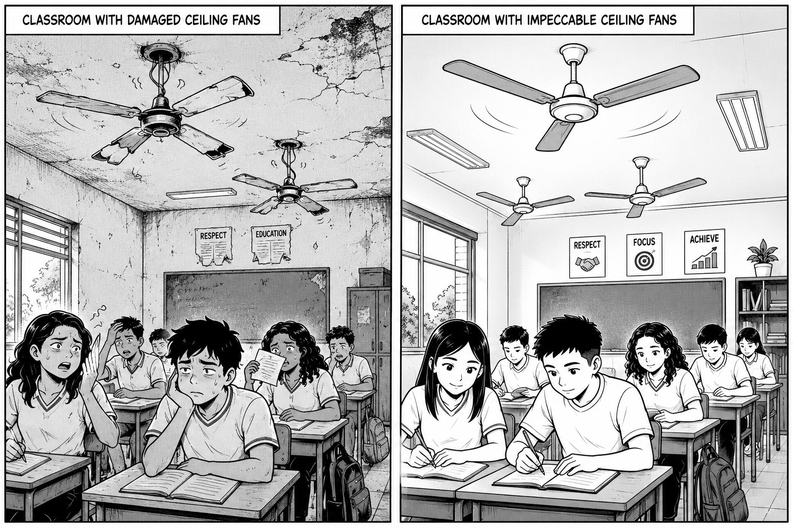
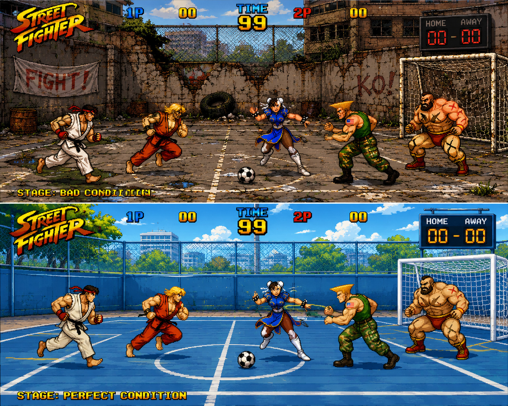
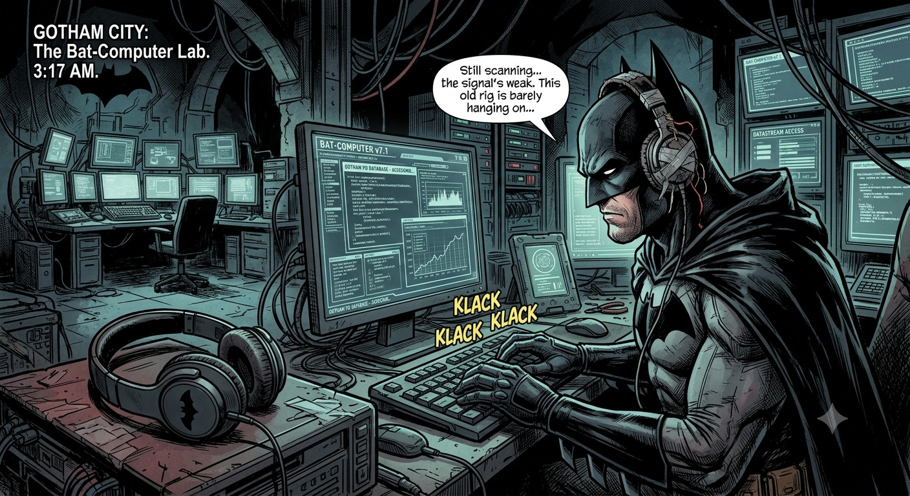
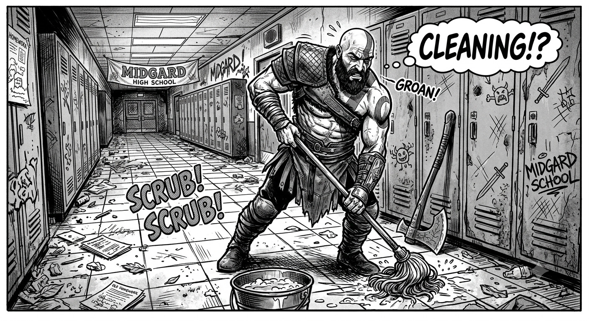

NOSSA ESCOLA NOSSO COMPROMISSO
O QUE NÓS PODEMOS FAZER PARA TORNAR NOSSA ESCOLA AINDA MELHOR?
PRESERVAÇÃO DO PATRIMÔNIO ESCOLAR
O cuidade com o patrimônio da escola é responsabilidade
de todos os estudantes e funcionários, os bens duráveis são importantes para o desenvolvimento
dos estudantes e gera um ambiente melhor para todos os envolvidos.

PRESERVAÇÃO DO PATRIMÔNIO DAS ESCOLA
Cuidar de forma mais consciente do patrimonio da escola, dos espaços esportivos, dentre outros
CARICATURAS NA ESCOLA

BATMAN - FONE
CUIDADO DOS EQUIPAMENTOS DE INFORMÀTICA

LIMPEZA DA ESCOLA

Arena multiuso em Atlanta (Georgia) e a casa do Atlanta Falcons da NFL
e do Atlanta United da MLS. Tem capacidade para 75 mil pessoas e
é
conhecido pela sua arquitetura robusta com 90 metros de altura, cobertura retrátil e
telão de 360 graus.